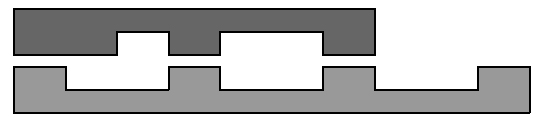
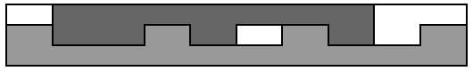

Europe - Northeastern Europe & Russian Republic - 2006/2007
| 3712 - Kickdown Europe - Northeastern Europe & Russian Republic - 2006/2007 | ||||
| Submit | Ranking | ||||
A research laboratory of a world-leading automobile company has received an order to create a special transmission mechanism, which allows for incredibly efficient kickdown -- an operation of switching to lower gear. After several months of research engineers found that the most efficient solution requires special gears with teeth and cavities placed non-uniformly. They calculated the optimal flanks of the gears. Now they want to perform some experiments to prove their findings.
The first phase of the experiment is done with planar toothed sections, not round-shaped gears. A
section of length n
There is a long stripe of width 3h
The stripe is made of an expensive alloy, so the engineers want to use
as little of it as possible. You need to ï¬nd the minimal length of
the stripe which is enough for cutting both sections simultaneously.
The input file contains several test cases, each of them as described below.
There are two lines in the input, each contains a string to
describe a section. The first line describes master section (teeth at the
bottom) and the second line describes driven section (teeth at the top).
Each character in a string represents one section unit -- 1 for a
cavity and 2 for a tooth. The sections can not be flipped or rotated.
Each string is non-empty and its length does not exceed 100.
For each test case, write to the output a line containing
a single integer number -- the minimal
length of the stripe required to cut off given sections.


Input
Output
Sample Input
2112112112
2212112
12121212
21212121
2211221122
21212
Sample Output
10
8
15
Northeastern Europe & Russian Republic 2006-2007